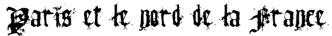
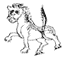
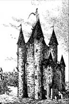
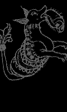
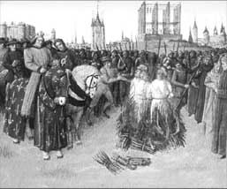

| |
|
 |
 |
|
|
| |
Les premiers inquisiteurs nommés par Grégoire
IX s'installent à la Charité-sur-Loire, important centre hérétique
du 13e siècle. Ils pratiqueront leurs enquêtes et leurs interrogatoires
depuis la Bourgogne, dans les provinces du centre et du nord de
la France : Besançon, Reims, Rouen et Tours avant de se voir attribuer
aussi la Flandre, l'Ile-de-France et la Champagne.
Robert le Bourge
se montre un inquisiteur particulièrement efficace. Il détruit notamment
la totalité de la très ancienne communauté cathare de Mont-Aimé
en Champagne, brûlant vif une cinquantaine d'hérétiques, et envoyant
quelques 187 autres "infidèles" au bûcher à Mont-Wimer. Mais ses
abus éveillent bientôt l'indignation de ses collaborateurs. Ne se
contentant pas d'envoyer les hérétiques sur le bûcher, l'inquisiteur
s'adonne à des morts beaucoup plus atroces, enterrant parfois vivantes
ses victimes. Suite à de multiples dénonciations, le Pape envoie
une commission d'enquête et le sanglant Robert est destitué puis
jeté en prison.
|
|
|
|
| |
| |
Les
exactions des inquisiteurs marquent une courte pause dans
la chasse à l'hérésie. Le système reçoit le soutien moral
et financier du Roi de France. La procédure est quelque peu
modifiée et c'est désormais l'inquisiteur de Paris qui envoie
des groupes de 2 à 6 inquisiteurs dans les provinces françaises.
Les tribunaux sont itinérants surtout dans la moitié nord
de la France qui n'est pas le théâtre des grandes hérésies
que connaît la région toulousaine. Les tribunaux se déplacent
de villes en villes, jugeant sur dénonciation les quelques
impies éparses et les cas de sorcelleries qui se multiplient
aux 15e et 16e siècle. Les interrogatoires ont lieu dans le
couvent de l'ordre auquel appartient l'inquisiteur, si la
localité en est dotée, dans le palais épiscopal de la ville
ou encore dans l'église locale ou dans les édifices municipaux.
|
|
|
 |
|
| |
|
|
|
|
|
|
| |
A Paris, le Temple, propriété des templiers jusqu'à leur arrestation
en 1307 par l'Inquisiteur Général de France Guillaume de Paris,
sert de prison aux dissidents arrêtés par les juges. C'est
ici notamment que l'Inquisiteur de Paris, Maurice de Saint-Paul,
fait emprisonner le Sire de Parthenay en 1323. Mais toutes
les prisons civiles ou épiscopales pouvaient servir aux inquisiteurs
et les hérétiques ont sans nul doute peuplé la plupart des
prisons parisiennes.
|
|
 |
 |
 |
 |
| |
|
|
|
|
|
|
|
| |
La
peine encourue par les hérétiques est celle du feu, qui représente
un acte de rédemption et de purification de l'âme pour l'accusé.
Dès les débuts de l'institution, encouragée par l'intolérance
religieuse de Saint Louis, la France commence à allumer des
bûchers en tout lieu.
A Paris, le roi assiste lui-même à l'exécution des hérétiques,
comme le montre cette gravure. Au fond à gauche, on aperçoit
la Bastille et à droite les gibets où l'on suspend le corps.
Dans la plupart des cas, les impies sont brûlés en Place de
Grève, actuelle Place de l'Hôtel de Ville.
|
|
|
| |
|
Il
faut encore préciser que la moitié nord de la France reste surtout
le terrain d'hérésie individuelle alors que la région languedocienne
se cantonne à l'hérésie cathare et vaudoise. Une fois cette dernière
enrayée après les différentes croisades et les guerres de religion,
l'Inquisition, quelque peu dépourvue, se concentre sur les astrologues,
les alchimistes, les sorciers et sorcières, les envoûteurs, incantateurs,
magiciens et les devins dont ils assimilent les pratiques à la démonologie.
C'est une véritable lutte qu'engage l'Inquisition aux 15e et 16e
siècle. La France usera de plus en plus de la torture et brûlera
un nombre considérable de ces "représentants du diable".
|
|
|
|
|